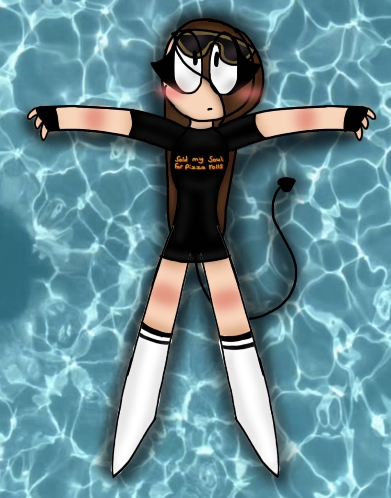
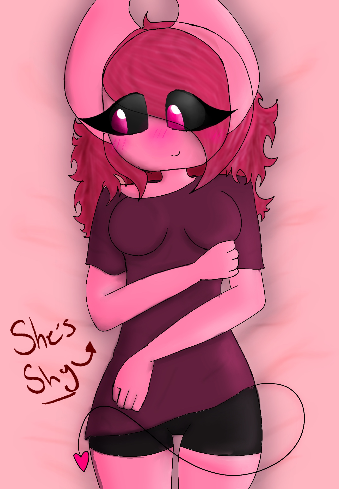

Garbage, or otherwise known as garbae/garbaecan online, is a character I created back in 2021, orignally based of a charcater I was using as my online persona.

this character had no specifc name and actually just went by amari. andd she actually sparked the creation of N0NAME but thats a whole other story that would be too long to get into. This character was an extention of myself, still wanting to express my self online. after working on an au i wanted to make another verison of this charcater but funny enough i ended up liking the other version of the character so much she became my main oc, and thus garbage was born! with a little bit of tweaking over the years and eras garbage has had many colors and many phases herself. anndd The au she was based off of was later worked on and i ended up making another version of garbage for the au.
garbage's new look!Garbage's Eyes change colors with the emotions she feels, Although her eyes are normal pink pupials usually her eyes can turn red and can also turn into hearts depending on what she feels. When Garbages eyes turn into hearts it means she has fallen in love or she is feeling lustful. although it is pretty rare to see It can happen, Garbage has a hard time falling in love but when she does she her eyes wont change. Her powers are also weakened when she does like someone. She might also struggle to use her powers on someone she actually likes since she has a connection with them.
more to come sooonnnnnnnn!
© 2026 garbaecan